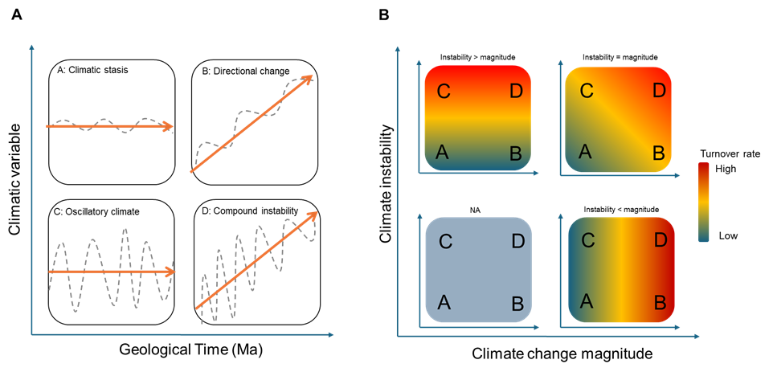

Compound Instability Model
|
Directional Climate Response Model
|
|||||
|---|---|---|---|---|---|---|
| Estimate | 95% CI | p | Estimate | 95% CI | p | |
| (Intercept) | 1.61 | 1.50-1.72 | <0.001 | 1.44 | 1.21-1.72 | <0.001 |
| Climate change magnitude | 1.06 | 0.99-1.13 | 0.097 | |||
| Climatic instability | 0.94 | 0.90-1.00 | 0.037 | 1.15 | 0.95-1.39 | 0.153 |
| Continent [North America] | 0.93 | 0.84-1.03 | 0.174 | 1.30 | 1.04-1.64 | 0.024 |
| Climate change magnitude × Continent [North America] | 0.86 | 0.81-0.91 | <0.001 | |||
| Climatic instability × Continent [North America] | 1.23 | 1.11-1.36 | <0.001 | 0.99 | 0.73-1.33 | 0.927 |
| Climate change magnitude × Climatic instability | 1.05 | 1.01-1.08 | 0.015 | |||
| |Climate change magnitude| | 0.95 | 0.77-1.18 | 0.663 | |||
| Climate change direction [warming] | 1.68 | 1.30-2.17 | <0.001 | |||
| Climate change direction [warming] × Continent [North America] | 1.32 | 0.98-1.77 | 0.072 | |||
| Climate change direction [cooling] × Continent [North America] | 0.44 | 0.28-0.69 | <0.001 | |||
| |Climate change magnitude| × Climate change direction [warming] | 1.03 | 0.80-1.32 | 0.842 | |||
| |Climate change magnitude| × Climatic instability | 0.89 | 0.81-0.98 | 0.014 | |||
| Observations | 46 | 46 | ||||
| R² | 0.076 | 0.416 | ||||
| AIC | -384.611 | -88.659 | ||||
| Estimates are exponentiated coefficients. Confidence intervals are 95%. | ||||||
3 Historical Paleoclimates and the Genesis of Regional Biotas
Abstract
Often restricted by the availability of temporal data, the study of biodiversity assembly often focuses on contemporary environmental conditions and short-term biodiversity snapshots. Newly available paleoclimatic reconstructions combined with georeferenced and dated fossil records offer the opportunity to elucidate how deep-time dynamics have shaped the assembly of biodiversity. Here, we investigate the influence of climate change on the taxa replacement through deep time (i.e. compositional turnover across geological periods) for large mammal fossil paleo-assemblages: Specifically, we evaluate the relative effects of two components of temporal climate change in deep time a) The magnitude of directional climate change between epochs, and b) The instability of climate within epochs. Over the last 20 million years in the Neogene, directional warming between epochs emerged as the dominant driver of large mammal compositional turnover. In North America, a 1 °C Ma⁻¹ change in temperature increased compositional turnover by about 46 % during cooling phases and 33 % during warming phases. In Europe, the same directional shifts produced much smaller changes, ~4 % during cooling and 11 % during warming. Alongside, climatic instability increased mammal compositional turnover in North America and reduced it in Europe; however, the effect was minimal in both cases. These contrasting results suggest that with ongoing rates of climate warming in the order of 0.2–0.3 °C per decade, a severe and unpredictable reorganization of global biodiversity can be expected. .
Keywords
Communty assembly, Paleoecology, Fossil turnover, Paleoecological dynamics, Large-mammals, Neogene
3.1 Introduction
The biological diversity we see today has assembled over millions of years with evolutionary processes unfolding together with global climate change across geological time. Yet, modern studies investigating the effects of climate change on biodiversity assembly often share a focus on contemporary patterns and processes (Ackerly 2003; Kraft et al. 2015; Harrison, Spasojevic, and Li 2020). Although it is possible to derive some inference on the role of long-term evolutionary and historical processes from “one-time snapshots” of current biodiversity patterns (Harrison, Spasojevic, and Li 2020; Chang and HilleRisLambers 2016), these contemporary patterns offer limited insights (Cadotte & Tucker 2017; Emerson & Gillespie 2008; Jackson & Blois 2015; Blois et al., 2014). A better understanding of evolutionary and historical processes is critical for biogeography, which focuses on the assembly of biodiversity at broad spatial scale (Cornell & Harrison 2014). The formation of global biogeographic regions, for example, is often attributed to plate tectonics movement and historical climate (Mazel et al., 2017). Nevertheless, the growing availability of spatially and temporally explicit biodiversity and paleoclimatic data, despite their heterogeneity and noise, creates an opportunity infer and model biodiversity assembly processes in deep time (Kocsis et al., 2021; Briega-Alvarez et al., 2025).
Over deep time, influences on modern biodiversity can be tracked in repeated episodes of extinction, diversification, and biodiversity reorganization (Albert & Carvalho 2011; Morales-Garcia 2020; Daru et al., 2017). Fossil records in deep time provide a window into those evolutionary episodes (Jackson & Blois 2015; DiMichele et al., 2004; Erwin 2009) and additional insights into processes that extend well beyond the Quaternary (0-2.8Ma) (Blanco et al. 2021; Mottl et al. 2021; Jabot et al. 2020). Digitally available fossil datasets with geo-chrono-referenced fossil records (e.g. NOW, PBDB fossil databases) (Vzliobaite et al., 2023) open new opportunities for modelling the assembly of biodiversity across the geological time scale (Jablonski & Shubin 2015; Blanco et al. 2021; Mottl et al. 2021; Jabot et al. 2020). When integrated with spatiotemporal paleoclimatic reconstructions, these fossil records can reveal how planetary climate change shaped biodiversity in the absence anthropogenic stressors (Chang & HilleRisLambers 2016; DiMichele et al., 2004; Lyons & Wagner 2009).
At least two complementary attributes of paleoclimatic dynamics could have influenced the assembly of regional biodiversity in deep time. First, the magnitude of directional climatic change between adjacent geological periods, expressed as the velocity of climate change per unit of time (Zachos et al., 2001; Galvan et al., 2025). Second, the climatic instability, expressed as variation in climate within each geological period (Vrba, 1992; Dynesius & Jansson, 2000; Finnegan et al., 2015). The Neogene (23Ma – 2Ma), saw the emergence of many modern plant and animal families, as well as the extinction of many others that were previously widespread during the Paleogene (66Ma – 23 Ma) (Costeur et al., 2004). During this period, the Earth’s climate transitioned from a greenhouse to an icehouse state, culminating in the onset of the Northern Hemisphere glaciation around 2-3 million Ma (Kennett et al., 1995). Climate change magnitude and climate instability across the Neogene could have jointly shaped the assembly of regional biodiversity via their influence on dispersal, speciation and extinction dynamics (Erwin 2009; Ding et al. 2025; neubauer2022short?)
High climate change magnitude could increase change in the composition of regional biotas by triggering speciation events and/or increasing extinctions rates. Climate-driven species factories (Stebbins 1974; Bernor et al., 1996; Eronen et al., 2012) can emerge in regions with high climate change magnitude (such as increasing aridity or cooling), where preadapted taxa gain a competitive advantage, diversify, and give rise to new lineages suited to the conditions of the near future. For example, during the gradual cooling of Earth during the Neogene (23Ma – 2Ma), ecosystems transition from warm evergreen subtropical woodlands to cooler, more seasonal deciduous forests (Jablonski, 2008; Barnosky et al., 2011; Reddin et al., 2020), many forest-adapted mammal taxa declined or went extinct, while open-habitat specialists such as bovids and equids expanded through adaptive radiations driven by ecological specialization (Jernvall & Fortelius 2002; Raia et al. 2011). As North America became drier than Eurasia during the middle Miocene–Pliocene, arid-adapted groups such as horses, camels, and canids evolved there first and later invaded the Old World. In addition, directional shifts in climate change such as the transitions between prolonged warming and cooling phases (or vice versa) can precipitate extinction cascades but also promote adaptive reorganizations (Pinsky et al., 2025; Lewthwaite et al., 2017; Kiessling et al., 2024) depending on how rapidly populations and traits respond to the climatic change shift (Benton & Pearson, 2001; Pimm et al., 1988). Morphological and genetic data show that climate-driven changes in temperature, aridity, and productivity influence body size, tooth morphology, and dispersal, often with temporal lags in the evolutionary response (MacFadden, 2000; Hadly et al., 2004), making transitional periods especially prone to ecological disequilibrium and elevated turnover (Guerin et al., 2013; Fitzpatrick et al., 2013).
In contrast to climate-driven species factories, low turnover rates are expected within climatically stable regions. In climatically stable regions, extinction and speciation rates tend to be lower due to species populations being less fragmented and experiencing homogeneous environmental pressures (Vasconcelos et al., 2021). Turnover may be driven mainly by species immigrants seeking refuge away from regions with periods of intense climatic change (Fortelius & Zhang, 2006; Casanovas-Vilar et al., 2010; Vasconcelos et al., 2021). For instance, during the Miocene (23Ma-5Ma), the Iberian Peninsula acted as a climatic oasis where suids, bovids, and small carnivores persisted after going extinct elsewhere in Europe (Casanovas-Vilar et al., 2010; Fortelius et al., 2014). Its stable climate led to low turnover, with most newcomers arriving via dispersal from Africa or Central Europe rather than local speciation (Agustí & Antón, 2002). In contrast to species factories, which are macroevolutionary sources of diversification (Fortelius et al., 2014), climatically stable regions act as macroevolutionary sinks, preserving past diversity with limited contribution to future radiations (Stebbins 1974; Fortelius et al., 2014; Mirzaie Ataabadi et al., 2013; Vasconcelos et al., 2021).
Here, we examine alternative hypotheses regarding the role of climate dynamics in driving the turnover of mammalian fossil assemblage during the Neogene (Figure 1). Specifically, A) regions experiencing low levels of directional climatic change (i.e. magnitude) and high levels of instability are expected to show minimal fossil turnover (Figure 1a.A, Figure 1b.A) (H1-stability), whereas those experiencing B) a high magnitude of climate change and low instability are expected to show elevated rates of turnover. (Figure 1a.B, Figure 1b.B) (H2-directional change). Finally, C) a low magnitude of climate change and high instability may generate episodic pulses of turnover without sustained faunal replacement (Figure 1a.C, Figure 1b.C) (H3-Oscillatory climate). D) When both climatic magnitude and instability are high, their effects may compound, producing accelerated and recurrent turnover as ecosystems experience rapid and irregular environmental shifts. (Figure 1a.D, Figure 1b.D) (H4- compound instability).

3.2 Methods
3.2.1 Fossil and paleoclimate data sources
3.2.1.1 Fossil occurrence data
We gathered large-mammal fossil data from the NOW database (Vzliobaite et al., 2023). Fossils of large mammals are particularly useful to uncover macro-evolutionary trends as they can preserve biogeographical patterns with high spatial fidelity (Darroch et al., 2021). Moreover, the results of centuries of paleontological research are now digitally available in aggregated fossil databases with standardized taxonomic nomenclature and geotagged records. Our queried subset of the database contained 18349 species level fossil records spanning six (6) mammal orders: Artiodactyla (40%), Carnivora (26%), Perissodactylia (24%), Primates (1.5%), and Proboscidea (8.6%). We excluded records a) georeferenced outside the North America and Europe continents (3068 records), and b) where the genus was classified as indeterminate (“indet.”) (4215 records). We ended with a total of 11066 species level fossil records (Table S1).To reduce taxonomic bias in sampling completeness we focused subsequent analyses in records aggregated to the genus level, obtaining a total of unique 6843 genus-level fossil space-time observations.
3.2.1.2 Defining the temporal and spatial scope of fossil records
Temporally, we binned individual fossil records to their corresponding Neogene epochs based on the mid-point between the maximum and minimum radiocarbon-based age estimates that are reported in the NOW database. We consider the following temporal boundaries to the Neogene epochs: The Aquitanian (23–21 Ma), Burdigalian (20–16 Ma), Langhian (15–14 Ma) and Serravallian (13–12 Ma), Tortonian (11–8 Ma), and Messinian (7–5 Ma), Zanclean (5–4 Ma) and Piacenzian (3–2 Ma) (Kennett et al., 1995).
Spatially, we used the ‘grid’ method to transform present-day geographic fossil coordinates and associated age estimates were projected to a discrete global grid defined separately for each Neogene epoch. These time-specific grids were rotated in one-million-year increments across the Phanerozoic (540–0 Ma) using the MERDITH2021 plate reconstruction model (Merdith et al. 2021; Jones et al., 2024), thereby correcting for underlying plate tectonic shifts in deep time and generating paleo-coordinates for all fossil observations. To do this, we used the paleorotate() function from the paleoverse R package v1.4.0 (Jones et al., 2023) (Figure S1).
3.2.1.3 Defining fossil paleo-assemblages
We used a hexagonal equal-area grid to assign fossil paleo coordinates to spatial bins representing fossil paleo-assemblages within each Neogene epoch. Specifically, we counted unique fossil observations within each hexagonal cell of resolution number 3 from Uber’s H3 geospatial indexing library (i.e. with an average spacing between adjacent cells of 103.6Km). This method was implemented with the bin_space() function of the paleoverse R package (v1.4.0). We filtered out those fossil paleo-assemblages containing less than three (3) Genera. This aggregation yielded 451 unique paleo-assemblages (Figure S2).
3.2.1.3.1 Paleo-atmospheric temperature data
We utilized paleo-atmospheric temperature reconstructions for the Northern Hemisphere (Hagen et al., 2019) as a proxy for macro-scale climatic variation across continental regions in space and Neogene across time. The dataset from Hagen et al. (2019) spans the Cenozoic (60 Ma to the present), and we extracted a subset corresponding to the temporal range of our fossil data. We aligned the spatial resolution of the climate data with that of our fossil paleo-assemblages by calculating simple means within each hexagonal grid cell. We created a raster stack for the Neogene (23–2 Ma) where each layer represented 1Ma (Figure S3).
3.2.1.4 Defining climate change variables
3.2.1.4.1 Calculating climate change magnitude and instability
To understand the environmental context in which fossil communities evolved, we summarized atmospheric temperature climate change across the Neogene within continental regions, separating long-term warming or cooling between epochs from short-term temperature variability within epochs.
First, we estimated the magnitude of climate change between consecutive Neogene epochs by extracting the raster values from each corresponding layer of the paleo-atmospheric temperature raster stack into a matrix form, with rows representing spatial grid cells and columns representing individual time points (Figure 2B). We conducted a linear regression for each grid cell individually, regressing temperature values against time for a given Neogene epoch. The coefficient extracted from each regression represents the magnitude of temperature change (slope). Positive slope values indicate warming trends whereas negative slope values indicate cooling trends (Figure 2C).
Second, we quantified climate instability by calculating the coefficient of variation (CV) of atmospheric temperature for each grid cell over each Neogene epoch. Specifically, we computed the ratio of the standard deviation to the mean temperature (adjusted to Kelvin by adding 273.15) for each hexagonal grid cell across each Neogene epoch (Figure 2D).
3.2.1.4.2 Defining spatial & temporal climate change regions
We identified regions with similar patterns of climate change in space and time to enable climate-based regional fauna comparison within continents across the entire Neogene. We started with a multiband raster stack were each layer represented the mean atmospheric temperature of continental raster pixels for each Neogene epoch. Then, we reduced dimensionality with Principal Component Analysis (PCA) to capture dominant spatiotemporal gradients of atmospheric temperature variation across the Neogene. Specifically, we used the rasterPCA() function from the RStoolbox package which perform PCA directly on raster objects by treating each pixel as an observation and each raster layer as a variable (Leutner et al., 2018). From this new multiband raster stack, we extracted the first three principal components (PC1–PC3) and rescaled them to a [0,1] range. The first 3 PCA axes summarized 98.9% of the variance present in the mean atmospheric temperature raster stack. The first component alone comprised 89.9% of the variance with the second and third components making up for the 6.3% and 2.7% respectively. After, we clustered continental regions with similar temporal climatic dynamics with k-means across a range of cluster numbers (k = 3 to 7). The optimal number of clusters was selected by maximizing within-group dispersion, as evaluated by the Calinski-Harabasz criterion (Figure 2A; Figure S4).
3.2.1.5 Inferring biodiversity assembly processes in deep time
3.2.1.5.1 Building a paleo-assemblage community network
To large scale biogeographical patterns through deep time, we linked fossil paleo-assemblages in the Neogene based on the similarity of their fossil composition. We represented this linkage as a bipartite network representing the presence (1) or absence (0) of each genus across all defined paleo-assemblages (i.e., unique combinations of hexagonal grid cells and Neogene epochs). We obtained the unipartite projection of these bipartite network by calculating the compositional dissimilarity between paleo assemblages. Specifically, we calculated Simpson dissimilarity between every paleo-assemblage pair with the beta.sim() component of the beta.pair() function in the betapart R package. Simpson turnover index emphasizes species turnover by accounting for differences in shared taxa without being influenced by nestedness effects, making it well-suited for detecting true compositional replacement (Baselga et al., 2013) and provides a more reliable basis for tracking large-scale biogeographical patterns in the fossil record. The resulting squared matrix of pairwise dissimilarities between paleo-assemblages served as the foundation for network construction (Figure S5).
3.2.1.5.2 Delineating paleobiogeographic clusters in space and time
We used a stochastic block modelling (SBM) to delineate coherent paleobiogeographic regions across the Neogene. Stochastic block modelling (SBM) is a non-parametric statistical method that identifies groups within a network. The model inputs the paleo-assemblage dissimilarity matrix and outputs a) a vector of group labels assigning every paleoassemblage to a group (i.e. paleobiogeographic cluster), and b) connectivity (omega) matrix summarizing the degree of compositional dissimilarity within and between paleobiogeographic clusters (Figure S7). The SBM summarized the fossil paleo assemblage dissimilarity matrix and converged in a set of 40 paleobiogeographic clusters each representing a group of spatiotemporally cohesive and ecologically similar fossil paleo-assemblages. These paleo-biogeographic regions each represented in average ~11 fossil paleo-assemblages, ranging from 2 to 22. Europe had 25 paleobiogeographic regions where while 15 belonged to North America.
We employed spectral clustering for SBM model initialization, which improves convergence and stability for large networks. Spatial and Temporal distance matrices were used to inform the SBM’s prior structure, enabling it to partition assemblages into groups that not only share ecological similarity but are also proximally located in space and/or time. Models were fitted across a range (0-60) of candidate cluster numbers (K), and the optimal number of groups was selected based on the Integrated Completed Likelihood (ICL) criterion (Figure S6). This criterion balances model fit and parsimony, penalizing overly complex models while favoring those that capture robust structure. Spatial distances were computed as great-circle distances (in kilometers) between the paleocoordinates (rotated to their Neogene positions) of each assemblage using the earth.dist() function from the fossil R package (Vavrek et al, 2020). Temporal distances were calculated as absolute differences (in millions of years) between the midpoint ages assigned to each Neogene epoch or each paleo-assemblage (Figure S7).
3.2.1.5.3 Linking climate change to fossil paleobiogeographic region dissimilarity
To obtain an standardized measure of the overall compositional heterogeneity within a window of space and time (i.e. beta-diversity), we calculated the mean of the diagonal elements of the corresponding omega submatrix, considering only the subset of paleobiogeographic clusters assigned to a given climate change region and Neogene epoch combination. In total we obtained 80 standardized measurements. We kept the number of contributing fossil assemblages and the variability of these submatrix diagonal summaries for use as model weights. We also recorded among-region dissimilarity from the corresponding off-diagonal paleobiogeographic cluster entries, but we did not consider them for further analysis.
We used beta-regression modelling to estimate the relationship between our standardized beta-diversity metric to a) the absolute magnitude of climatic change, b) the direction of the temperature trend (i.e. change slope sign - cooling (-) vs warming (+) ), c) climatic stability, and d) continent affiliation. Climate change magnitude and climatic instability predictor variables were scaled for comparability, and regions with more sampling effort were given greater weight based on the number of individual fossil observations (Supplementary text S1). Overall, we fitted a set of four beta-regression models with progressive degrees of complexity. The baseline model (Null model) included only the main effects of climate‐change magnitude and instability. Geographic structure was introduced in (Continental Model) by allowing both effects to vary by continent. Model (Continental Climate Sensitivity Model) further accounted for compound instability (the magnitude × instability interaction) and relaxed the assumption of constant variance by modeling the precision (dispersion (ϕ) component) of the beta-regression model response as a function of both instability and continent. This allowed the model to reflect that turnover patterns may be more variable under unstable climates and may differ in consistency between Europe and North America. In addition, site-based weights were applied to correct for uneven sampling intensity across bins. The most complex model (Directional Climate Response Model) added warming–cooling asymmetry (magnitude × direction). This explicitly tested whether large magnitudes of climatic change had stronger biodiversity effects under warming versus cooling episodes. Continent interactions with all predictors allowed for geographic contrasts in these dynamics. Model comparisons were evaluated using the Akaike Information Criterion (AIC). Finally, we regressed turnover predictions from the best-fit model against geological time age using a loess smoothed function to identify the trajectory of turnover across 1Ma time intervals.
3.3 Results
3.3.1 The diversity of fossil paleoassemblages
For all fossil paleo assemblages, genus richness per cell averaged approximately 14, with values ranging from 4 to 68. Across all Neogene epochs, the Burdigalian and Serravallian epoch exhibited the highest mean fossil richness, each averaging 16 genera per cell. The Langhian followed with a mean of 15, while the Tortonian and Messinian epochs showed means of 14 and 13, respectively. The Aquitanian and Piacenzian epoch recorded slightly lower averages, with 11 and 12 genera per cell. The Zanclean epoch had the lowest mean richness at 10 genera per cell. Minimum richness was consistent across all intervals at 4 genera per cell, while maximum values varied from 27 in the Zanclean to 68 in the Tortonian.
3.3.2 Climate change across spatiotemporal climatic zones
Across climatic zones, temperature change and instability varied markedly within and between continents (Figure 3). In North America, climatic slopes showed a wider range, with higher median values in zones 2 and 4 (up to ~0.25 °C Ma⁻¹) and greater dispersion compared to other zones, indicating more pronounced directional shifts. Europe, in contrast, displayed generally lower and more consistent slopes across all zones (~0.10–0.15 °C Ma⁻¹). Patterns of climatic instability followed a similar structure: in North America, variability was higher overall, while Europe showed lower median instability and narrower ranges across zones. (Figure 3).

Five (5) climate change clusters best represented the spatial patterns of climate change dynamics contained in the paleoclimatic PCA. (Figure 2). The first climate change cluster span western Europe and low-latitude North America, where atmospheric temperature remained stable with minimal variability. The second climate change cluster was in northern Africa, California, and south of Florida, and showed a pattern of early warming followed by cooling, with increasing variability in Europe after 10 Ma. The third climate change cluster covered Russia, the Alps, and northeastern North America. This one displayed strong directional change, mid-Miocene cooling followed by European warming. The fourth climate change cluster, found in central North America, eastern Europe, and the steppes, was the most variable, with a major warming spike in the late Miocene to early Pliocene. Finally, the fifth climate change cluster, in northwestern North America, cooled early and later stabilized, with a milder warming–cooling cycle in Europe.
3.3.3 Inferring biodiversity assembly processes in deep time
Fossil assemblages within a paleobiogeographic cluster shared on average about 40 % of their genera with other paleobiogeographic clusters in the same Neogene epoch. In North America, turnover was more heterogeneous across climate change clusters relative to Europe. We found strong evidence supporting the directional change hypothesis (H2), with opposite responses to warming and cooling between continents. In North America, rapid warming of about +0.25 °C Ma⁻¹ increased turnover by roughly 7%, whereas in Europe, equivalent warming reduced turnover by around 10%, indicating divergent biogeographic responses to directional climate forcing. We also found partial support for the oscillatory climate hypothesis (H3): climatic instability, approximately 0.1% higher relative temperature variability, slightly reduced turnover in Europe but increased it by up to 5% in North America. However, these effects weakened once climatic direction was modeled separately, suggesting that instability alone does not drive faunal reorganization. Finally, we found little evidence for the compound instability hypothesis (H4); instead, extremes of high magnitude and strong instability buffered turnover (Figure 4).
The Compound Instability Model and the Directional Climate Response Model consistently show that Neogene faunal turnover was shaped by the combined effects of long-term temperature trends and short-term climatic instability, with outcomes differing between continents. In North America, positive directional trends of about +0.25 °C per Ma or more unstable climates (≈ 0.11% higher relative temperature variability) each raised turnover by roughly 4–5%, reducing the proportion of genera shared among fossil assemblages. In Europe, turnover was overall higher but less sensitive to climatic fluctuations. Stronger temperature trends or instability slightly decreased turnover (by about 1–2%). When the direction of temperature change was explicitly included, the Directional Climate Response Model revealed that warming periods reduced turnover in Europe by roughly 10%, while increased it in North America by about 7%. High absolute temperature changes combined with strong instability produced a net buffering effect (≈ −11%).
Overall model performance improved markedly from R² ≈ 0.08 (Compound Instability Model) to R² ≈ 0.42 (Directional Climate Response Model) (Table 1). When examining the results of the best fit model across time, In North America, during the Aquitanian–Burdigalian, turnover remained moderate (~0.62–0.64) under relatively stable climatic conditions. Across the Langhian–Serravallian, turnover peaked (~0.68–0.70) as the dashed line indicates a shift toward stronger warming trends (up to +0.25 °C Ma⁻¹) and higher climatic instability (~0.002–0.0025). Through the Tortonian, turnover declined sharply (~0.60), while both warming and instability subsided. A second, smaller rise in turnover occurred during the Messinian, preceding a strong cooling phase (~ –0.4 °C Ma⁻¹) and reduced instability (~0.001), after which turnover fell to its lowest levels in the Zanclean–Piacenzian (~0.57), marking a period of climatic stabilization toward the Pliocene. In Europe, turnover remained comparatively stable (~0.60–0.65) across epochs but exhibited a gradual, low-amplitude rise after the Miocene Climatic Optimum (MCO). During the Aquitanian–Burdigalian, both turnover and climatic variables were low and steady, with slopes near 0 °C Ma⁻¹ and instability with an SD close to 0.1% of its mean. Through the Langhian–Serravallian, turnover modestly increased (~0.62–0.64) as the dashed line shows mild cooling (–0.1 to –0.2 °C Ma⁻¹). The Tortonian–Messinian interval marked a slight rebound in temperature trends toward neutral to weak warming (~+0.15 °C Ma⁻¹) and minimal instability variation. By the Pliocene, turnover rose to its highest levels (~0.65) under moderate warming (~+0.2 °C Ma⁻¹) and low climatic variability with SD (~0.1% – 0.15%) of their means (Figure 4).